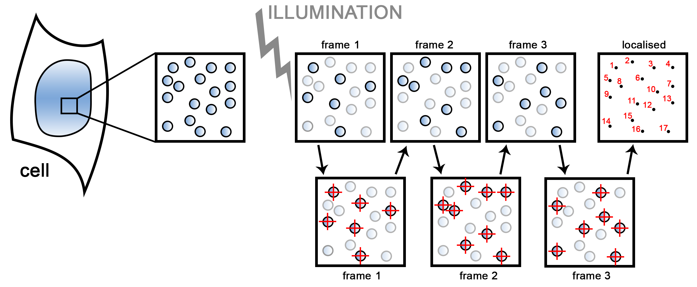
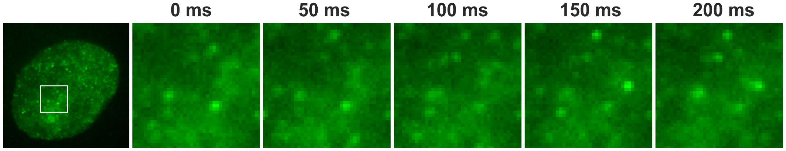

Photoconversion of DNA binding dyes and its application in super-resolution microscopy
One of the most important parameters describing the quality of a microscopic image
is its resolution. Many modifications to standard fluorescence methods have been
introduced in order to improve the resolution of images. Consequently, among
others an optical microscopy (super-resolution) technique called
Single Molecule Localisation Microscopy (SMLM) has been introduced.
The term super-resolution may be applied to any optical microscopy technique that
allows increasing the resolution beyond the theoretical Abbe’s limit. Conventional
microscopy techniques (e.g. Confocal Laser Scanning Microscopy) are limited by the
imposed 180-nanometre resolution limit, while super-resolution techniques
circumvent this restriction. For SMLM positions of single fluorescent molecules
are identified and registered in order to obtain high quality images (see
Figure 1, Figure 2 and Video 1).

Figure 1. A scheme of a single molecule localisation microscopy
experiment.
The investigated biological specimen is stained with a chosen fluorescent dye.
There are many single molecules of the dye piled together and fluorescing
simultaneously. By employing specific environment and illumination only a few
fluorescent molecules become fluorescent at a time. Images of stochastically
appearing fluorescing single molecules are registered until a sufficient number
of single molecules is collected in order to reconstruct a super-resolution image
of an investigated specimen. Positions of single molecules are localised with high
precision, and later a super-resolution image is reconstructed.
Video 1. Schematic video showing stochastically appearing fluorescing single
molecules and reconstruction of the image.
By using photoswitchable, photoconvertible, or photoactivable dyes/probes one
can activate the fluorescence of only a few molecules at a time, making it
possible to apply SMLM, and obtain images of cell structures with resolution
greater than 180 nm. The current choice of fluorescent dyes/probes eligible for
single molecule localisation microscopy is rather broad, and the research based on
these fluorophores is constantly developing. Nevertheless, so far, the majority of
the conducted research has been focused on cell structures that are easily accessible
to the dyes/probes, like microtubules or actin filaments (e.g. by applying low molecular
weight dyes (like e.g. Alexa Fluor 488) conjugated to antibodies). One very important
field that seeks further investigation is research on DNA structure. DNA, due to its
extremely dense packing in a cell nucleus, forms complicated structures. There are not
many fluorescent dyes/probes eligible for super-resolution imaging of DNA. Even if the
indirect forms of labelling are considered (e.g. fusions with proteins, immunolabelling)
and the direct forms of labelling (e.g. using small DNA binding dyes), the choice of
eligible fluorophores is still very limited. In my PhD thesis I have focused on
investigation of photoconvertible dyes that are directly binding to DNA, i.e.
DAPI, Hoechst 33258/33342, and Vybrant® DyeCycle™ Violet. Even though DAPI
and Hoechst dyes have been known for many years now, their exploitation in super-resolution
microscopy has not been described so far, as their blinking behaviour has not been reported.

Figure 2. Single molecule fluorescent bursts. Single molecule fluorescent
bursts de- tected in green-yellow emission range (585 – 675 nm) during a typical experiment
using high intensity single wavelength excitation (50 mW, 491 nm). The green-emitting molecules
of VdcV (conc. 500 nM) are reversibly bleached and stochastically reappear in the detection
channel of the SPDM microscope. Note that some of the molecules appear bright with much longer
lifetime than the integration time of the camera.
The key to the successful exploitation of the abovementioned dyes in super-resolution
microscopy is the process of their photoconversion, and generation of the
green-emitting photoproducts. DAPI and Hoechst dyes bind to DNA by means of minor
groove binding, which is an undeniable advantage, as the dyes themselves do not
significantly perturb the chromatin structure. Additionally, all of the proposed
dyes enable direct and dense labelling of DNA. They are of low molecular weight and
they penetrate into the chromatin structures much more easily than antibodies or big
fluorescent proteins. In my thesis I have investigated photophysical properties of the
above mentioned dyes and applied those dyes in single molecule localisation microscopy,
to obtain high quality images of DNA structures (Figure 3).

Figure 3. Super-resolution image of an optical slice of a nucleus.
A – Super- resolution image of an optical slice of a nucleus of a Vero-B4 cell stained with 1 μM
Vybrant® DyeCycleTM Violet, B – an image of the same nucleus acquired in a widefield microscope
(exc. 405 nm, 450 μW, em. 450 – 490 nm).